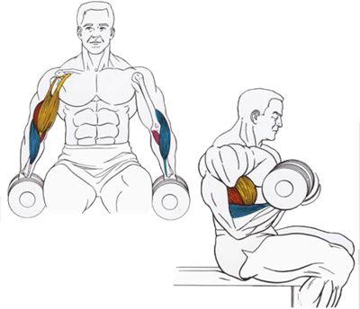

Подойдут самые обычные гантели. Эффективнее всего бицепс прокачивает сгибание рук сидя на стуле.
Исходное положение:
Cесть на стул.
Взять гантели.
Техника выполнения:
Сгибать и разгибать руки в локтевых суставах.
Рекомендации:
На выдохе рука должна сгибаться, а на вдохе – разгибаться.
Начинать можно с 8-12 повторений. Если чувствуете, что повторения даются без труда, следует увеличить вес гантелей. Количество подходов: 3.
Положение рук может быть разное. Можно держать их на весу, а можно упираться локтем о колено или верхнюю часть бедра. Можно с успехом чередовать все эти положения.
Разгибать и сгибать руки следует медленно. Только в этом случае на нужную мышцу осуществляется максимальная нагрузка.